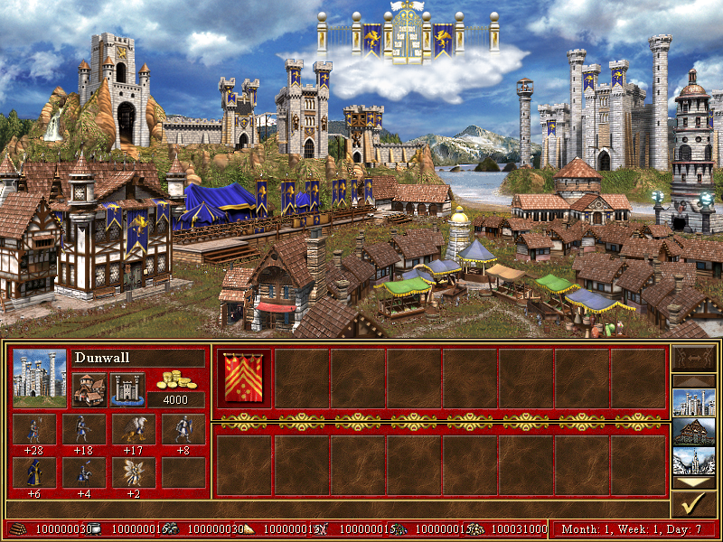
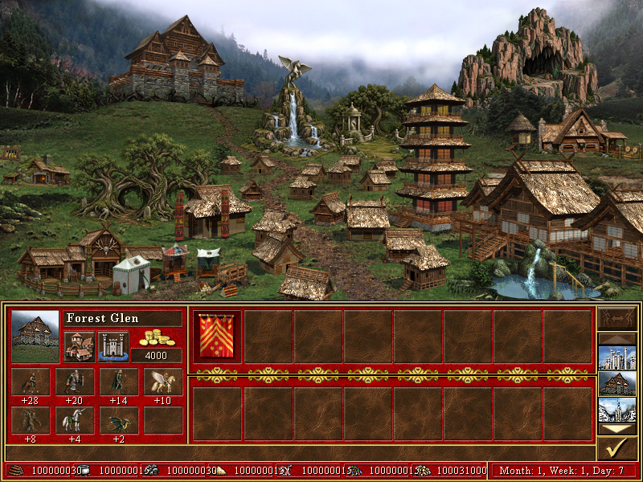
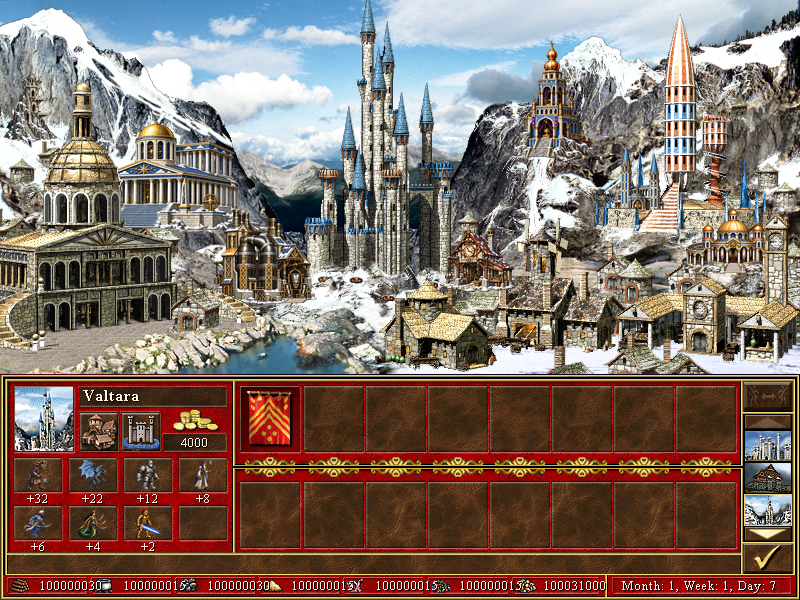
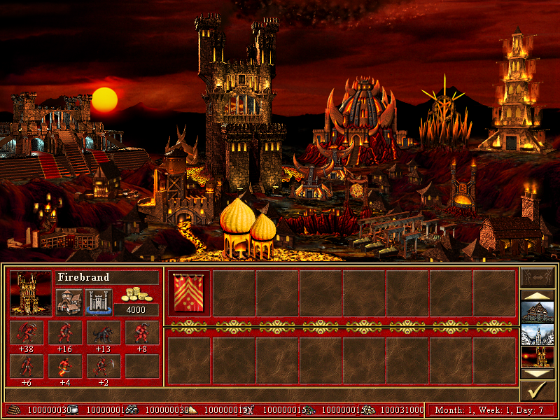
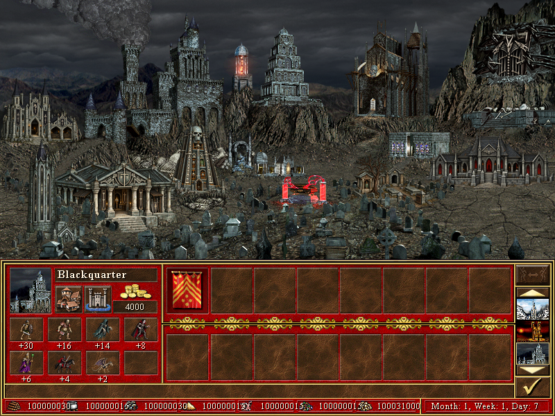
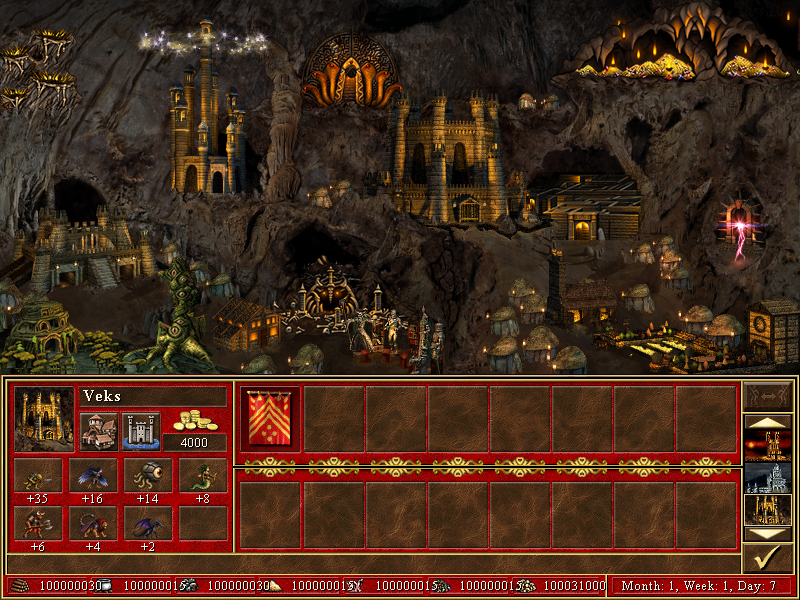
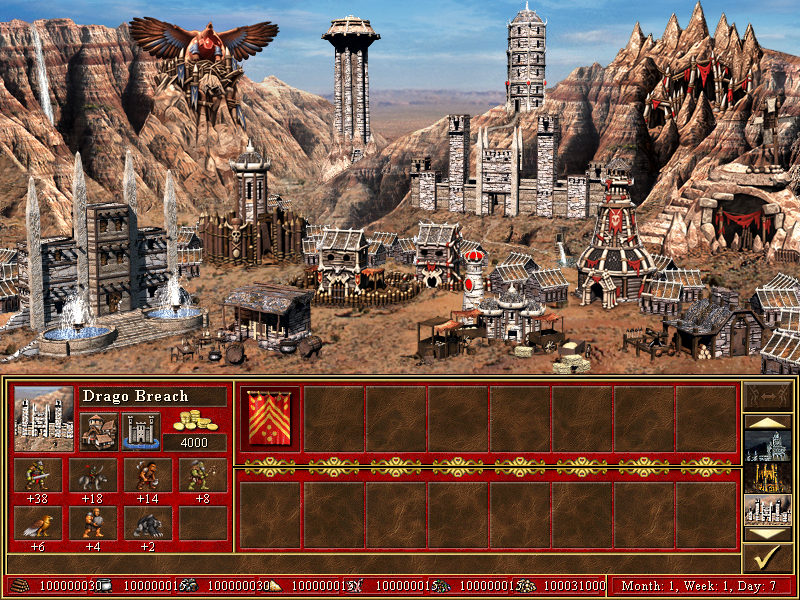
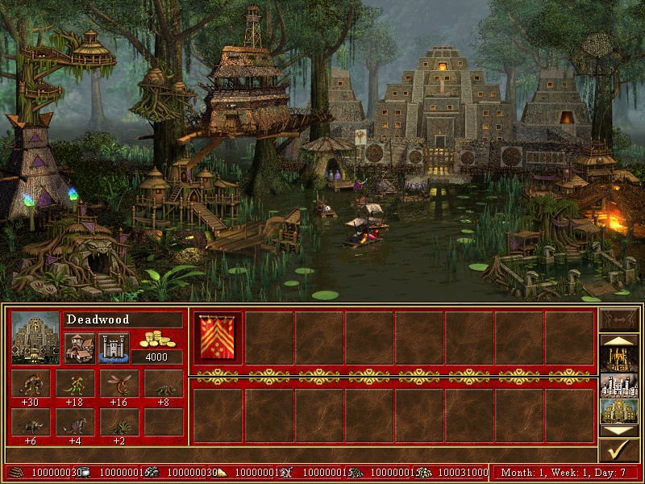
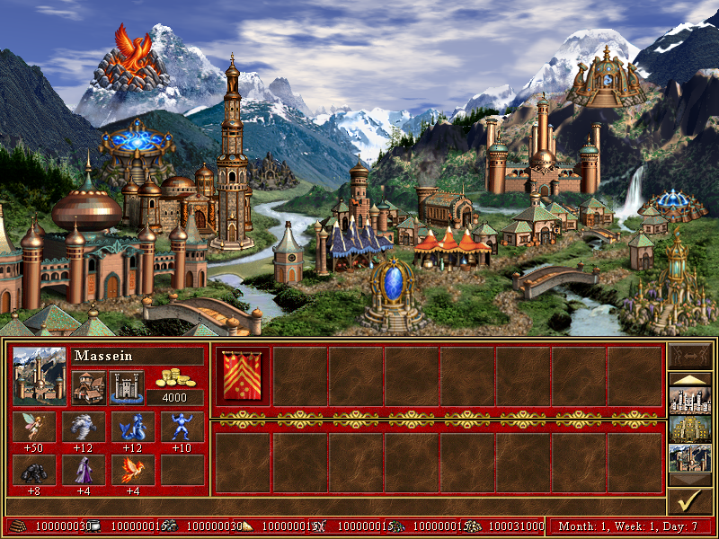
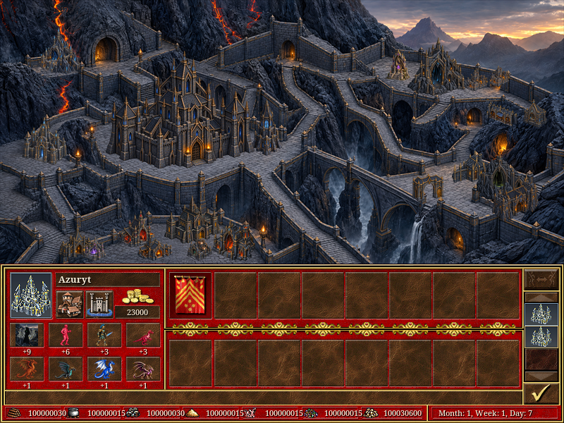

Zrzuty kontrolowanych zapisów w rzeczywistym interfejsie. Klasyczne miasta: testy 19.10; Smocza Cytadela: aktualna korekta tarasów 26.10. Są to ekrany testowe, nie zapis pełnego przejścia.









